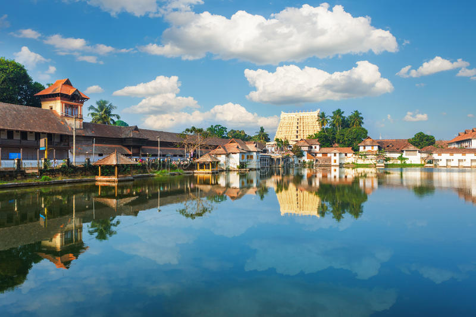

The Shree Padmanabhaswamy Temple
The Shree Padmanabhaswamy Temple is a Hindu temple located in Thiruvananthapuram, the state capital of Kerala, India. It is considered as the richest place of worship in the world. The name of the city of 'Thiruvananthapuram' in Malayalam translates to "The City of Lord Ananta", (The City Of Lord Vishnu) [1] referring to the deity of the Padmanabhaswamy temple. The temple is built in an intricate fusion of the Chera style of architecture, featuring high walls, and a 16th-century gopura.
...
...